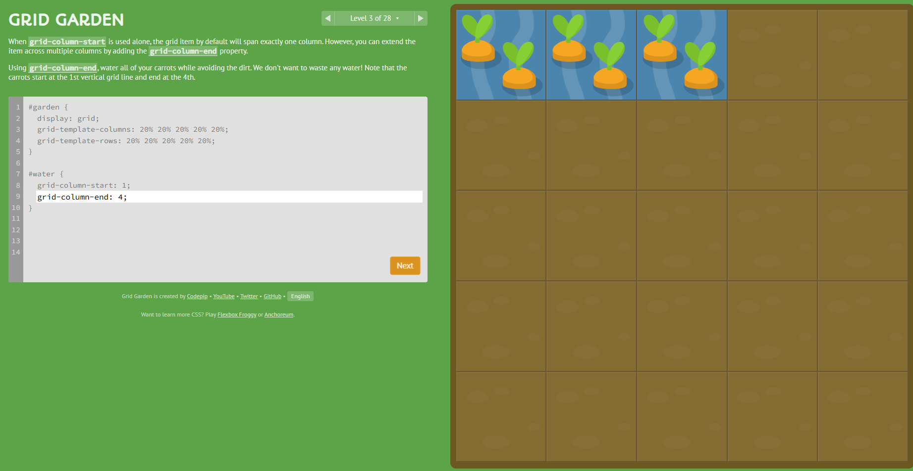

No nivel 3, as cenouras estão em alguns quadrados e querem que a água chegue até elas. Para isso tem que colocar um
grid-column-end: 4; esse código estende a coluna até a quarta linha, sendo que antes teve um grid-column-start:1;
fazendo com que a contagem comece na primeira linha.
